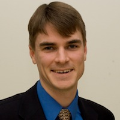
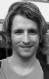
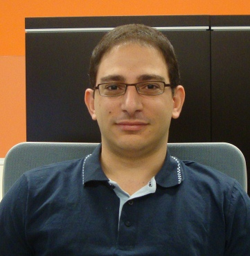
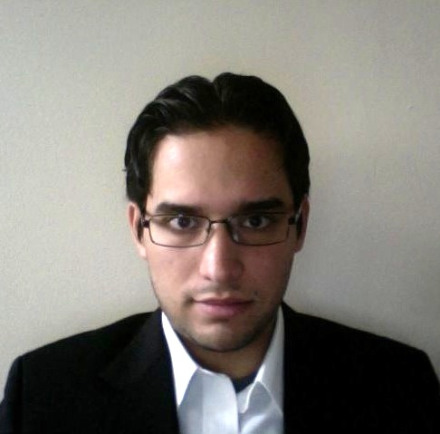

Principal Investigator

Individual website
david.ketcheson@kaust.edu.sa
David I. Ketcheson
Associate Professor of Applied MathematicsIndividual website
david.ketcheson@kaust.edu.sa
Postdoctoral Fellows

Sobolev space preconditioning and gradient methods for elliptic PDEs, conjugacies between time-h-maps of ODEs and their discretizations near bifurcation points
lajos.loczi@kaust.edu.sa
Lajos Lóczi
Research interests:Sobolev space preconditioning and gradient methods for elliptic PDEs, conjugacies between time-h-maps of ODEs and their discretizations near bifurcation points
lajos.loczi@kaust.edu.sa
Benson Muite
Research interests:Continuum Mechanics, Partial Differential Equations, Spectral Methods, Numerical Methods, Parallel Computing
benson.muite@kaust.edu.sa
Ph.D. Students

Numerical analysis, Time integration of differential equations, Strong stability preserving methods, Positivity preservation.
yiannis.hadjimichael@kaust.edu.sa
Yiannis Hadjimichael
Research interests:Numerical analysis, Time integration of differential equations, Strong stability preserving methods, Positivity preservation.
yiannis.hadjimichael@kaust.edu.sa
Former group members
Amal Alghamdi
MS Thesis topic: Parallelization of a hyperbolic PDE solver in PythonGraduated: MS 2012
Now a PhD student at University of Texas at Austin

Matteo Parsani
Postdoctoral fellow, 2010-2013Now a postdoctoral fellow at NASA Langley, working with Mark Carpenter

Graduated: MS 2011
Now a PhD student at Texas A&M, working with Jean-Luc Guermond
Manuel Quezada
Thesis topic: Solitary waves in two-dimensional periodic mediaGraduated: MS 2011
Now a PhD student at Texas A&M, working with Jean-Luc Guermond
Aron Ahmadia
Research Scientist, 2009-2012Now a research scientist at the US Army Engineer Research and Development Center